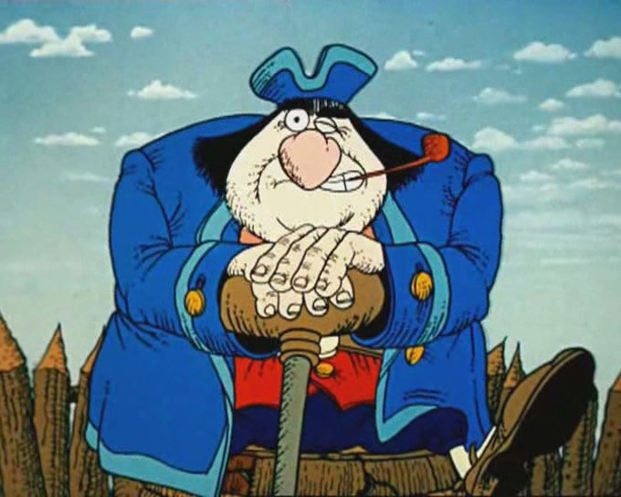
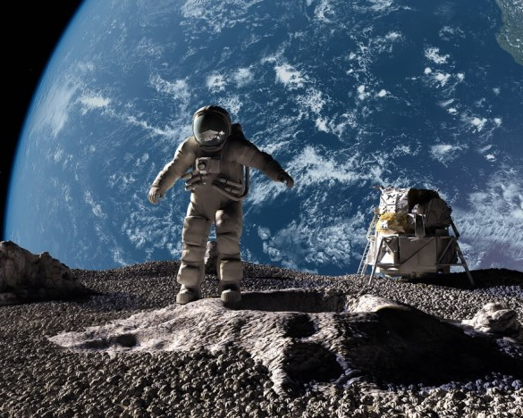

види кіномистецтва
-
Художнє кіно
Вид кіномистецтва, побудований на грі акторів. До художніх фільмів належать майже всі твори кінематографа. Перші художні фільми почав знімати Жорж Мельєс 1896 року. В Україні перші фільми було показано глядацькій аудиторії 1896 року.
-

Мультиплікаційне кіно
Вид кіномистецтва, твори якого створюють методом покадрової зйомки послідовних фаз руху мальованих (графічна або мальована анімація) або об'ємних (об'ємна або лялькова анімація) картинок. Сьогодні класифікація розрізняє 4 типи анімації: 2D, 3D, покадрова мультиплікація і stop-motion.Крім цього, існують деякі більш специфічні види анімації, для яких також потрібні певні вміння. Наприклад, Голкова, пісочна та анімація на воді
-
Документальне кіно
Фільм, в основу якого покладені зйомки реальних подій та осіб. Темою для документальних фільмів найчастіше стають історичні події, культурні та соціальні явища, відомі особистості та товариства. Завдання документалістики: Засіб навчання і освіти; Дослідження (географічне, зоологічне, історичне, етнографічне тощо); Пропаганда (науки, технології, релігії); Хроніка (тривале спостереження за подією, репортаж); Публіцистика
-

Науково-популярне кіно
Вид кінодокументалістики, завданням якого є оприлюднити наукові відомості, факт і результати досліджень, описати на рівні загальних понять (тобто «популярною мовою») наукові гіпотези, ідеї, відкриття, погляди, може стосуватися як вже добре вивчених питань, так і тих, що перебувають у процесі розробки, «на вістрі» науки. Таким чином науково-популярні фільми також популяризують (пропагують) глядачам по суті і сам науковий метод для сприйняття навколишньої дійсності.